GATEKEEPERSMAG
A publication about the doors that open, the rooms that stay closed, and the people who build their own.
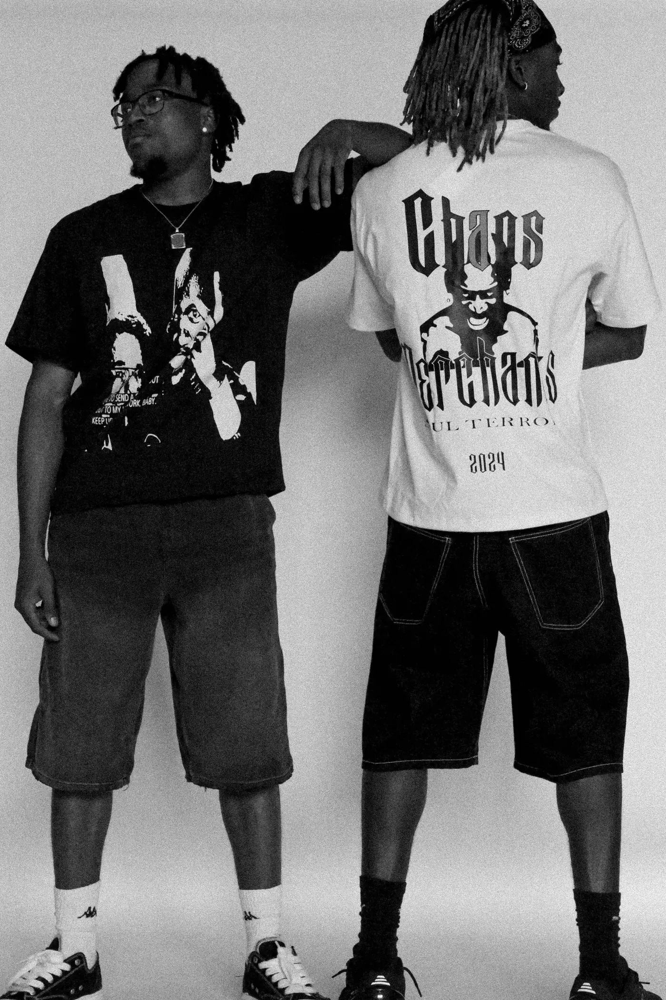
01 / The letter
WHO HOLDS THE door?
Every scene has gatekeepers. The editor with the guest list, the buyer with the budget, the curator with the wall, the algorithm with the reach. Some of them earned the door. Some of them just found it unlocked.
GATEKEEPERS MAG is about that moment: standing outside a room you are more than qualified to enter, and deciding whether to knock, wait or build your own. Issue 01 takes the last option.
The Soul Terror 2024 lookbook was shot in Rotterdam with a crew, not a cast. No borrowed set, no rented audience. The clothes were made to be worn in the city they came from, and the images were made to outlive the feed.
So we edited it as a magazine. Twelve looks, studio and street, sequenced to feel like a night that keeps going. The result is not a catalogue. It is an argument for owning your own distribution.
“If the door does not open, the wall is still yours to paint.”
Issue 01 is photo-led on purpose. The interviews, essays and long-form reporting start in Issue 02. This one is a visual statement first: a crew, a city and a standard.
02 / In this issue
THE contents.
Six chapters. One continuous story. Use the links to jump to the photography.
03 / Chapter one
THE door.
Access is a material. It can be earned, inherited, borrowed or refused. This issue is about what happens after the refusal.


On access
A door is only useful if someone inside is willing to open it. When they are not, the lesson is not to beg louder. It is to find a wall with better light.
On taste
Taste is not expensive. It is specific. The most convincing rooms are built by people who know exactly what they are willing to leave out.
On ownership
Own the label, the images, the list and the means of production. Then a closed door is an inconvenience, not a verdict.
04 / Chapter two
THE looks.
Twelve looks from the Soul Terror 2024 collection. Cut for the street, photographed like it matters.
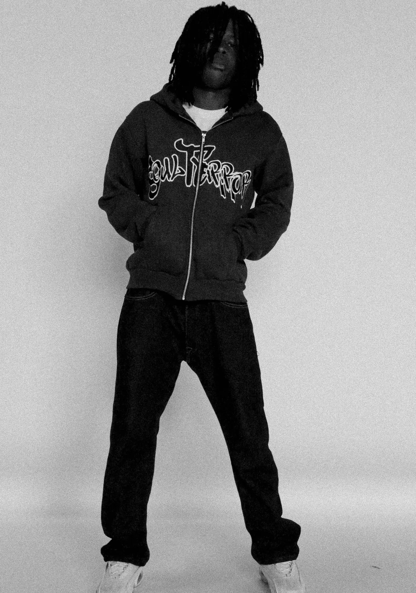
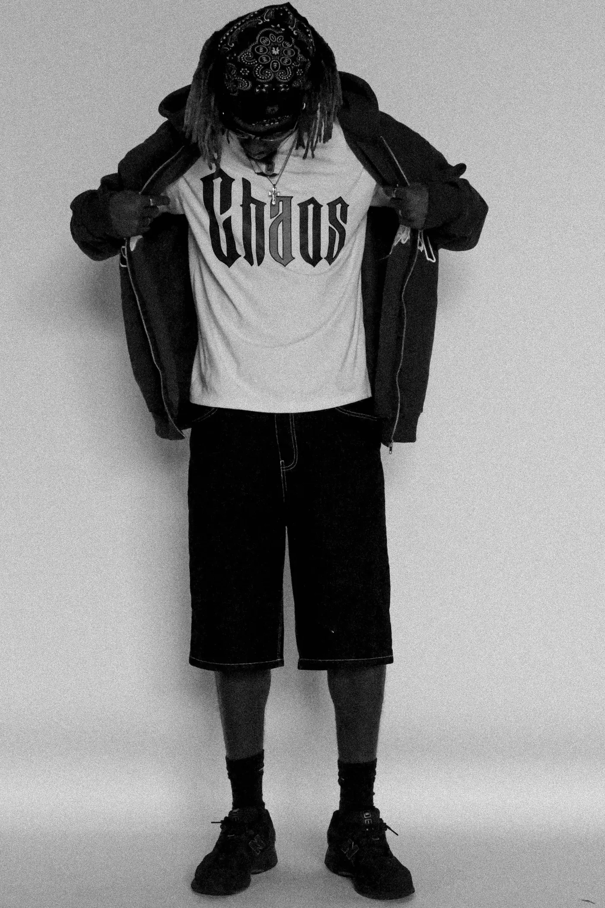
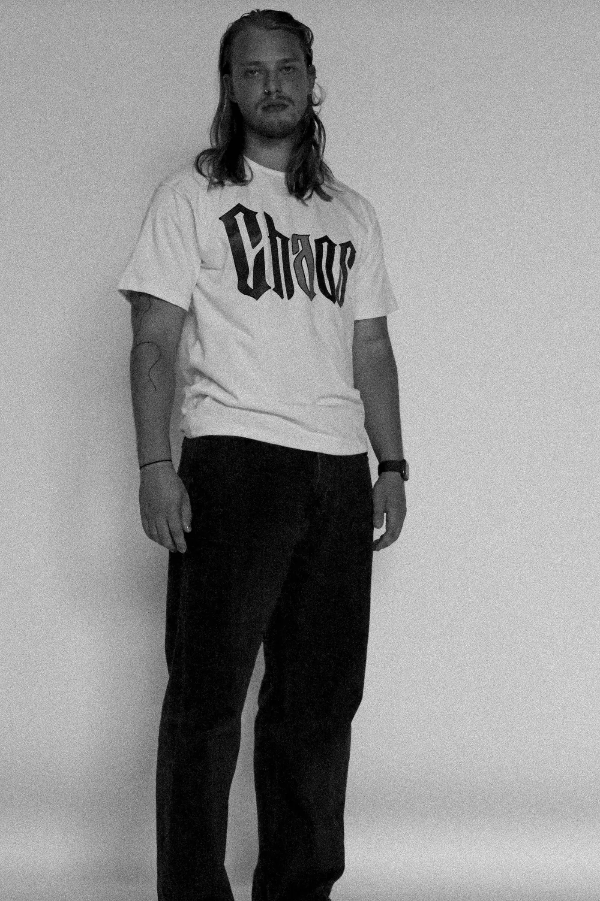
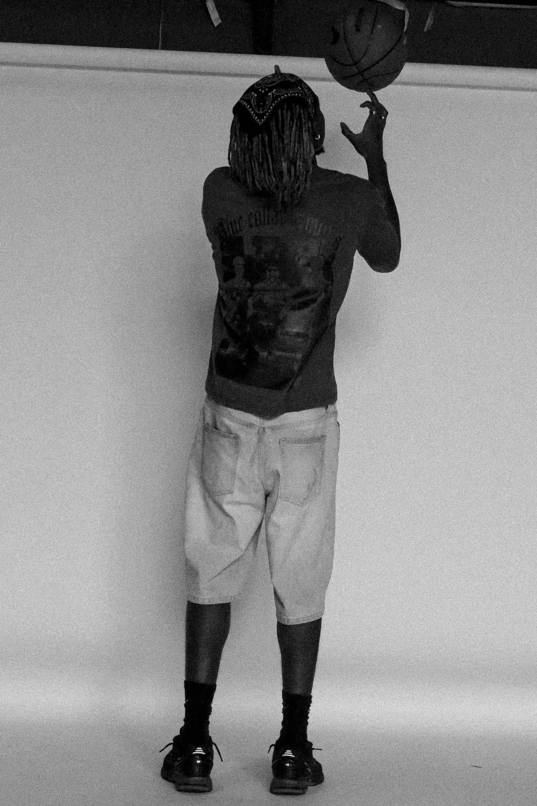
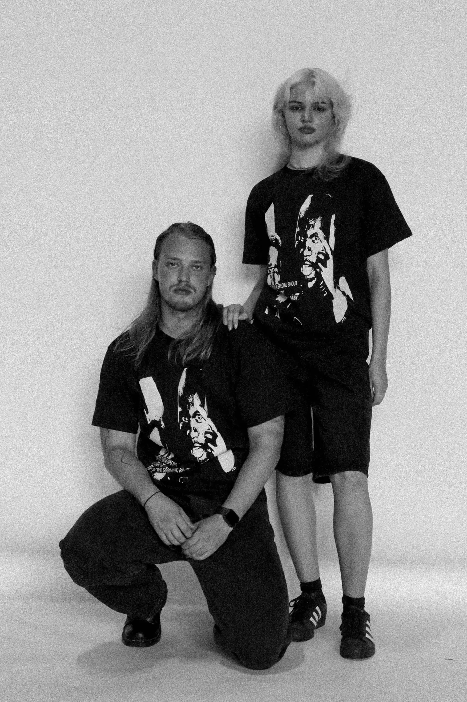

05 / Chapter three
THE crew.
No cast. No rented audience. The people in the clothes are the people who built the world around them.
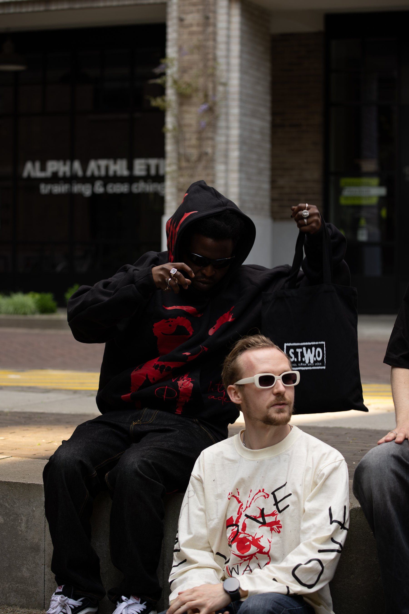
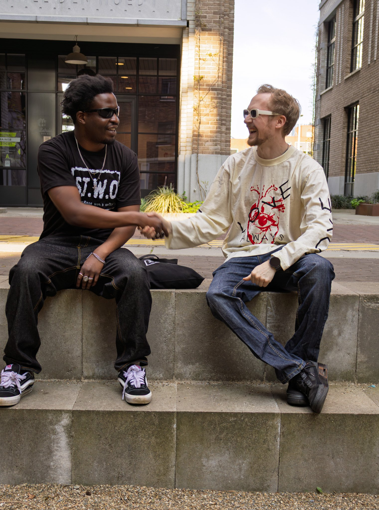
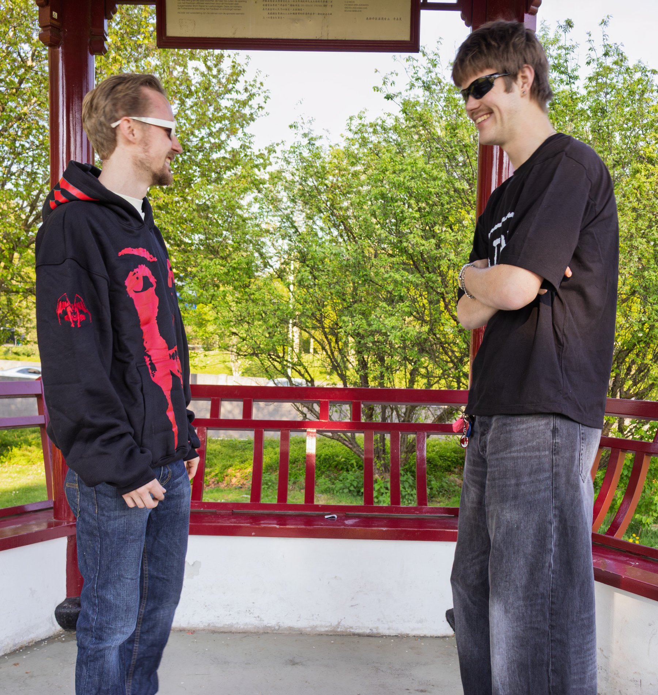
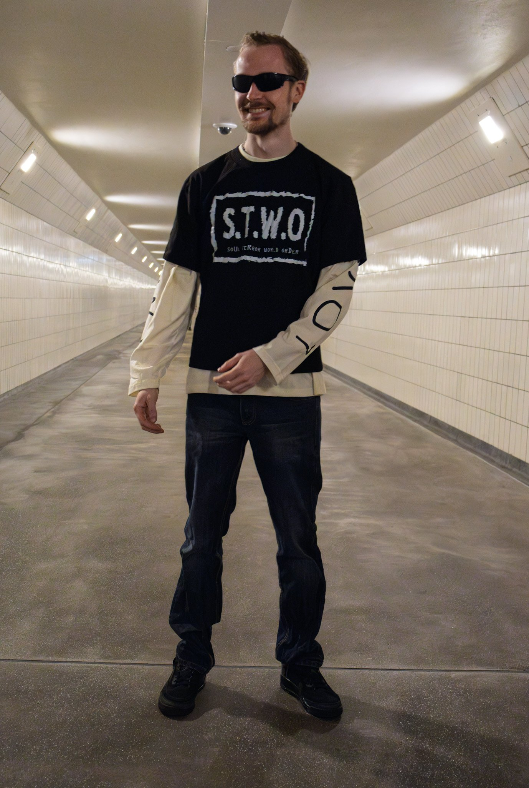
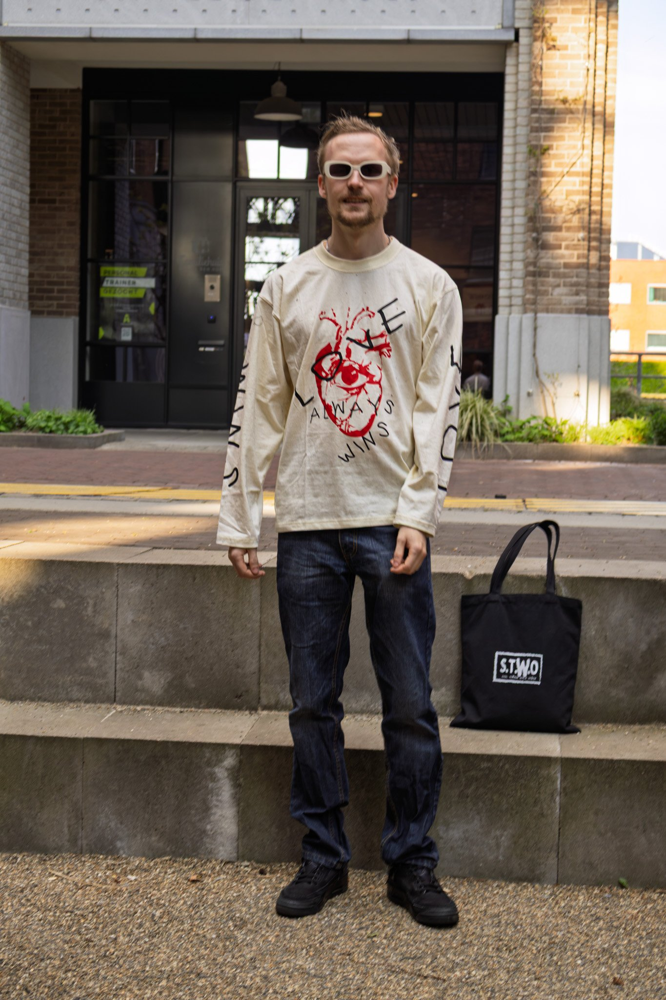
06 / Chapter four
AFTER dark.
The second half of the shoot. Flash, concrete and the part of the city that only shows up after the shutters come down.

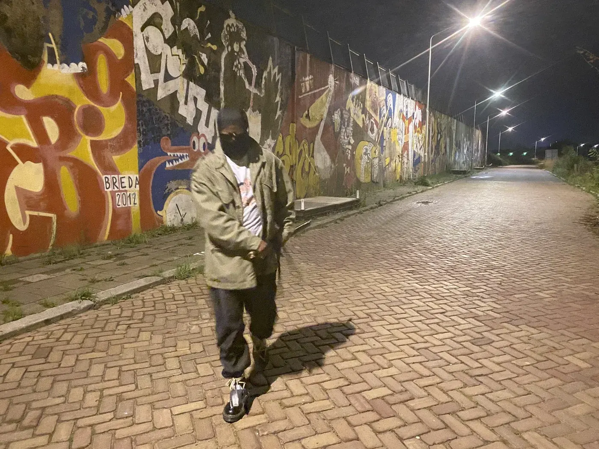
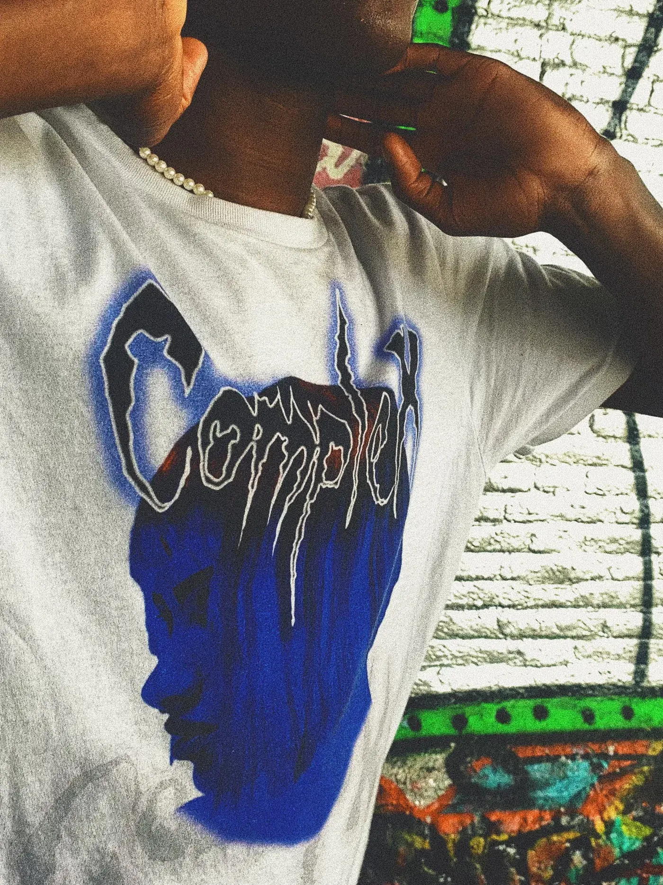
Issue 02 / Open call
BRING US A story WORTH PRINTING.
Issue 02 widens the door. We are looking for photographers, writers, designers and crews with a body of work and a point of view. No pitch deck. Send the work and one paragraph on why it belongs.
MAKE YOUR NEXT DROP A publication.
Editorial direction, art direction, print production and launch content. For brands with more to say than a caption allows.
Talk to the editors